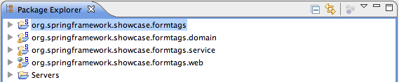
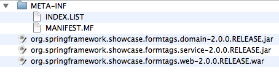

The final step in the migration is that of a full blown
OSGi application with web support. The Virgo Tomcat Server introduces a
new packaging and deployment format: the PAR.
A PAR is a standard JAR with a ".par"
file extension which contains all of the modules of your
application (e.g., service, domain, and infrastructure bundles
as well as a WAR for web applications) in a single deployment unit.
Moreover, a PAR defines both a physical and logical application boundary.
The PAR sample is comprised of four directories, as shown below.

The formtags-par directory is a build project that
understands how to create the PAR from its constituent bundles.
Achieving the appropriate level of granularity for your OSGi application is more of an art than a science. It helps to look at the different requirements:
Table 6.1. Granularity drivers
| Requirement | Description |
|---|---|
| Domain/Technical Layering | Applications can be split either by domain (i.e., by use case or vertically) or by their technical layers (i.e., horizontally). Since the Form Tags application essentially has only a single use case, the bundles are split by technical layering (i.e., domain, service, and web). |
| Refreshability | A major benefit of OSGi is that of refreshability: if one bundle is changed, only bundles that have a dependency upon the exported types need to be refreshed. This has a high impact on development time costs as well as production costs. However, this can lead to lots of smaller, fine grained bundles. An example of this granularity would be to separate out the service API and implementation into two different bundles. This means that a change in the implementation wouldn’t require any other bundles to be refreshed. |
Ultimately the right level of granularity will depend upon your particular application and team.
The service bundle is identical (except for the Bundle-SymbolicName) to that
in the shared-services variation of the sample.
The PAR has also separated out the domain classes into their own bundle.
When layering by technical considerations, it is again
somewhat of an unofficial convention to have a
.domain bundle.
Finally we need to construct the PAR itself. The following are the contents of the exploded PAR.

You can see that the PAR itself doesn’t contain any resources or Java classes: it simply packages together a related set of bundles as a single, logical unit.
The PAR does however, contain its own /META-INF/MANIFEST.MF.
Manifest-Version: 1.0 Application-SymbolicName: org.springframework.showcase.formtags-par Application-Version: 3.0.0 Application-Name: FormTags Showcase Application (PAR)
For more information on the contents of the PAR’s
/META-INF/MANIFEST.MF, please consult
Chapter 4. Developing Applications.
You can now deploy the PAR on the VTS, for example by copying
/dist/formtags-par*.par to the VTS’s
pickup directory.
You should then see console output similar to the following:
The console output has been reformatted to fit this document.
[2009-07-01 15:13:43.306] fs-watcher <SPDE0048I> Processing 'CREATED' event for file 'formtags-par-2.0.0.RELEASE.par'. [2009-07-01 15:13:44.060] fs-watcher <SPDE0010I> Deployment of 'formtags-par' version '2.0.0.RELEASE' completed. [2009-07-01 15:13:44.068] Thread-20 <SPWE0000I> Starting web bundle '/formtags-par'. [2009-07-01 15:13:45.212] Thread-20 <SPWE0001I> Started web bundle '/formtags-par'.
Navigate to http://localhost:8080/formtags-par to see the welcome page.
Web-ContextPath manifest header in /META-INF/MANIFEST.MF
of the Web application bundle within the PAR.